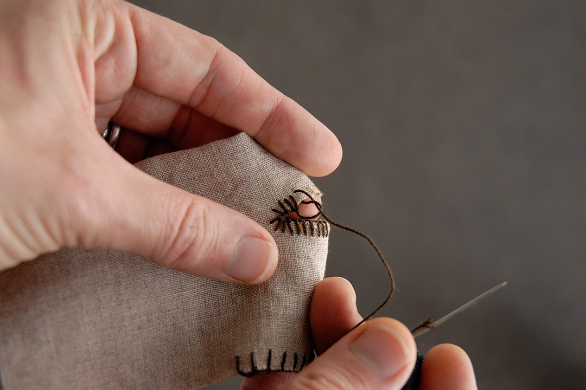
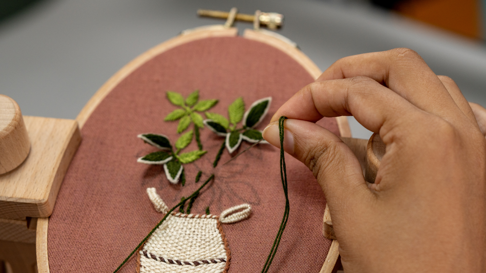
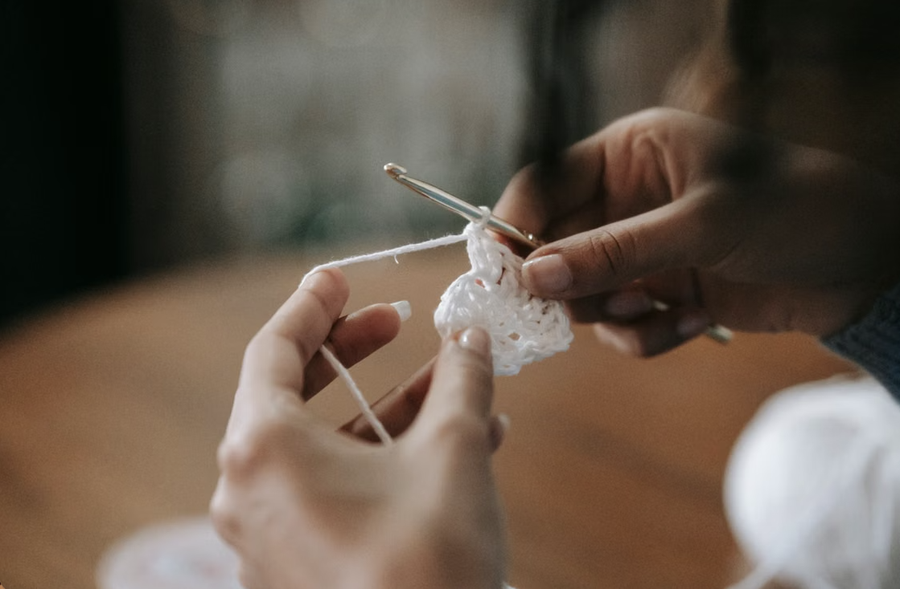
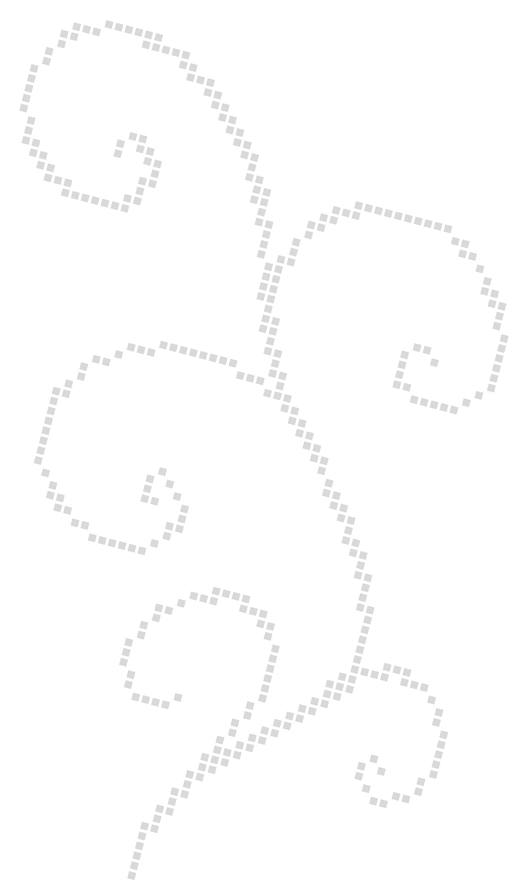

The Craft

Sewing
Sewing at its core is a relatively simple art form or mode of craft. Essentially, the act of sewing can be described as joining two or more pieces of fabric together with a needle and thread.
Some common tools that often accompany said needle and thread are scissors, measuring tape, tailors chalk, fabric pins, and in some cases, a sewing machine.
Though its roots can be traced back at least 20,000 years ago, this art form is increasingly sophisticated. Modern machines have countless functions that usually significantly increase a designer's efficiency as well as the strength of their work.
When it comes to hand sewing, some of the most common stitches include the running stitch, the backstitch, the whipstitch, and the blanket stitch.

Embroidery
Embroidery is the act of decorating the surface of an existing textile or piece of fabric with (embroidery) thread or floss. This process originated in China and the Near East around the year 30,000 BC. Embroidery needles, which are often thicker than hand sewing needles, are used as tools which guide the floss through the surface of a fabric. This art form is used to embellish textiles with decorative elements, the likeness of something or someone, or sometimes words/text.
A hoop or frame is essential in the process of embroidery, as the fabric receiving the addition needs to be pulled taut throughout the process.
Cross-stitches, satin stitches, and chain stitches are three of the most common techniques by which embroidery is done. Though, much like sewing, this art form is extremely versatile, and there are many styles within this craft that are typically grouped by the materials they require and how stitches are applied to the fabric.

Crochet
Crochet is the act of forming interlocking yarn, or crochet thread, loops with a hooked needle in order to form a fabric garment or item. Some of the most popular types of this art form are as follows:
- AMIGURUMI: “The Japanese art of crocheting small, stuffed toys using tight single-crochet rounds.”
- TUNISIAN: “Blends knitting and crochet by keeping multiple loops on a special long hook, creating a dense, woven fabric.”
- CORNER-TO-CORNER (C2C): “Works projects diagonally from one corner outward in block patterns.”
- TAPESTRY: “Carries multiple yarn colors along a row to create sharp graphic shapes and color work pictures.”
- MOSAIC: “Uses alternating colors and dropped stitches to build geometric, multi-colored patterns without cutting the yarn every row.”
Among these popular types, many different stitches are used to produce specific desired effects. There are slip stitches, single crochet stitches, half double crochet stitches, double crochet stitches, and treble crochet stitches, just to name a few.
Crochet is often described as having originated in some form from a type of embroidery called Tambour in which a small hook is used to form continuous chain loops. Though tambour embroidery originated in India, it hadn't gained significant popularity until it made its way to Europe in the 18th century. European “nun's lace” of the 16th century alongside tambour embroidery merged to create early crochet.
